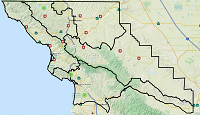
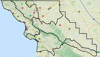

BootLeafSLU
GithubExample information about project written here. Example information about project written here. Example information about project written here. Example information about project written here.
Project by The Dude1, The Dude 2
Example information about project written here. Example information about project written here. Example information about project written here. Example information about project written here.
Project by The Dude1, The Dude 2